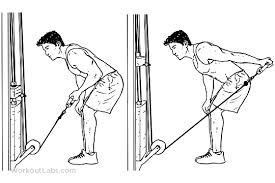

Quand il est exécuté en deux temps, c’est un excellent exercice pour la définition de la longue portion du triceps. Les actions d’extension de l’articulation du coude et d’hyperextension de l’épaule ainsi que des muscles sollicités sont nécessaires dans toutes les activités qui exigent de pousser vers le bas et l’arrière et les mouvements pour lancer ou frapper.Quand vous gardez le bras bien en place le long du corps ou légèrement au-dessus, seul le triceps brachial est impliqué.